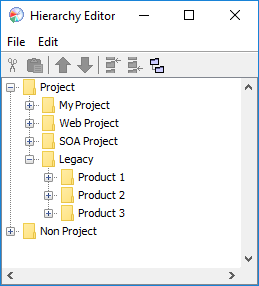
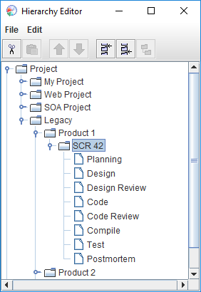

Step 1: Create a project in the dashboard Step 1: Create a project in the dashboard
Step 1: Create a project in the dashboard Step 1: Create a project in the dashboardThe first thing we need to do to get started is to create a new PSP2.1 project in the dashboard. To do that, we will start the hierarchy editor by choosing Hierarchy from the Configure menu.

We need to decide where to place this project in our work breakdown structure. For this example, we will imagine that we are responsible for supporting a legacy application called "Product 1". Our users have identified a problem, and issued "Software Change Request (SCR) #42".
As you can see in the image above, this user has created "nodes" or "folders" in their hierarchy to keep things nicely organized. We will place this change request under the "Project / Legacy / Product 1" node in our work hierarchy. To do that we will select the "Product 1" node by clicking it once. Next we will pick the "Edit" menu and choose "Add Template" followed by "PSP2.1". This will add a PSP2.1-based project to the project hierarchy as a child of "Product 1". When the new project is added, it is given a default name. We can change the name to better describe what we are working on. In this case, we will choose a helpful name, like "SCR 42". For more information on using the hierarchy editor, and creating both "nodes" and projects, see the Using the hierarchy editor help topic.
Once the project has been created and renamed, click on the little expansion control to the left of the "SCR 42" project to expand its child nodes in the hierarchy tree. There you can see that the dashboard has placed all the process phases for a PSP2.1 project.

Now we can save our changes and close the hierarchy editor via the File menu.